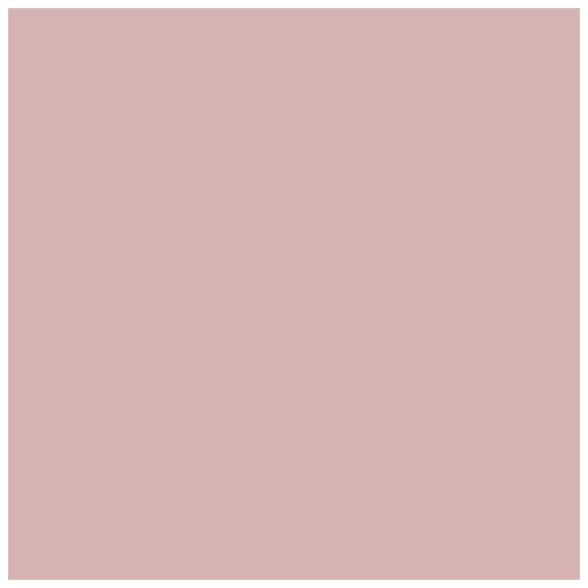
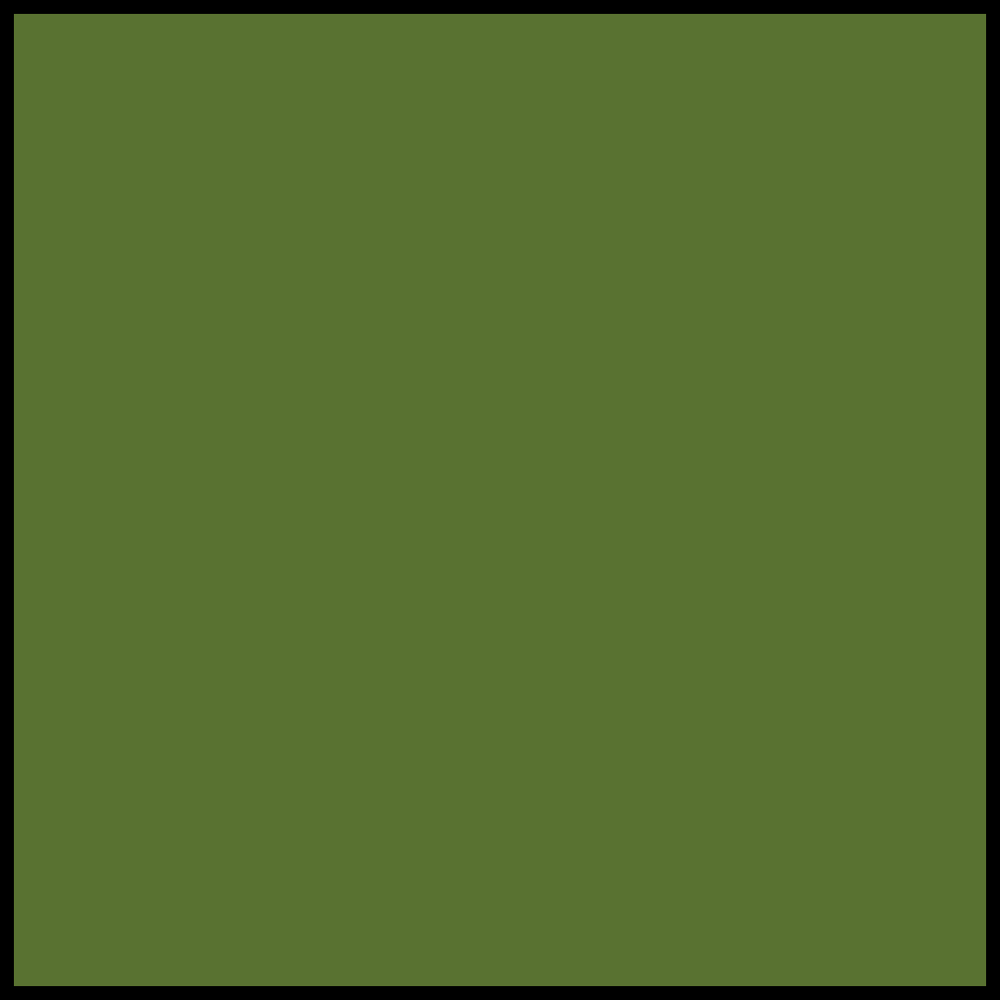
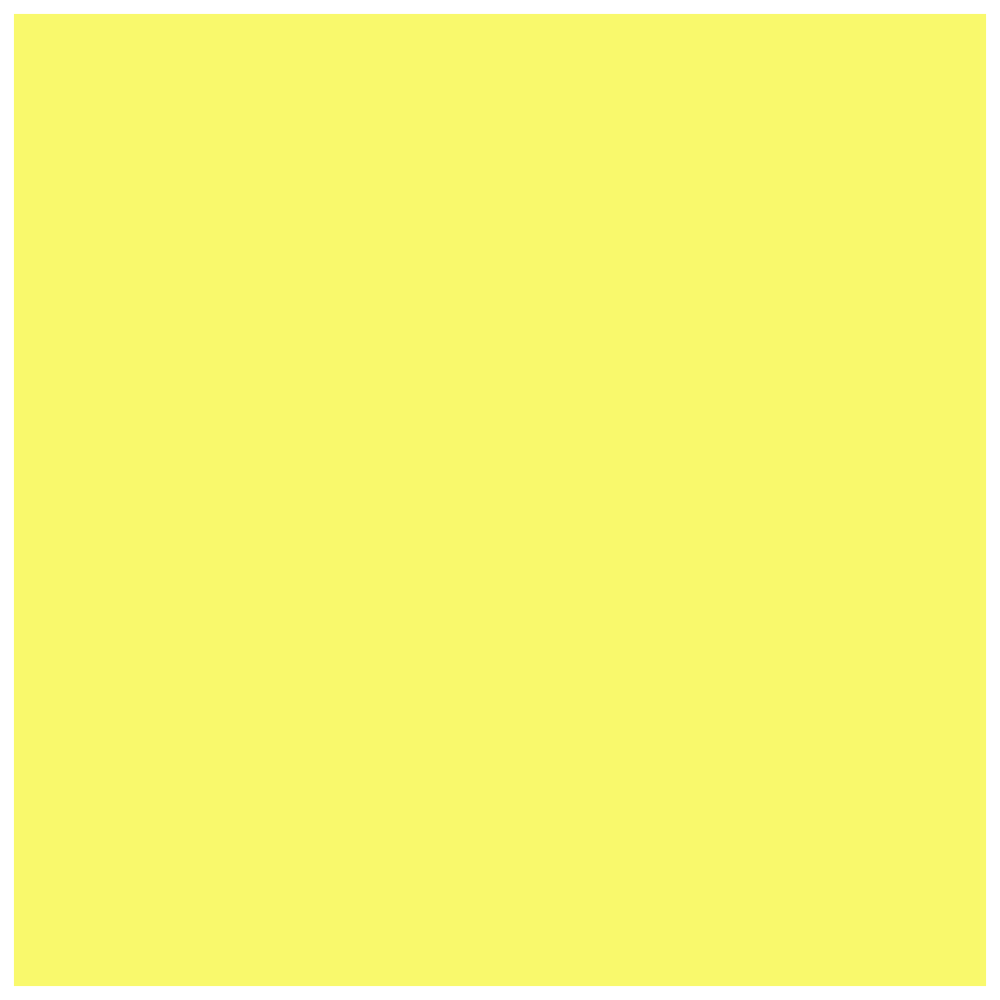
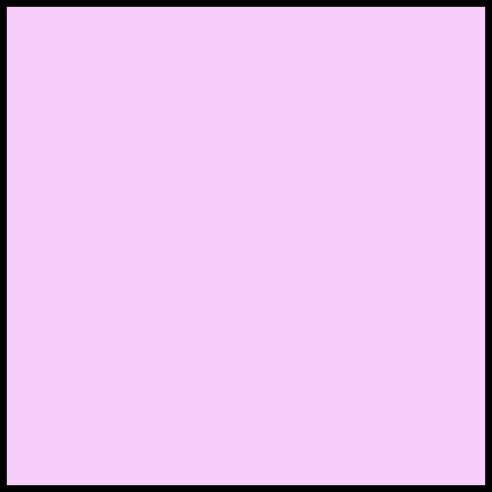
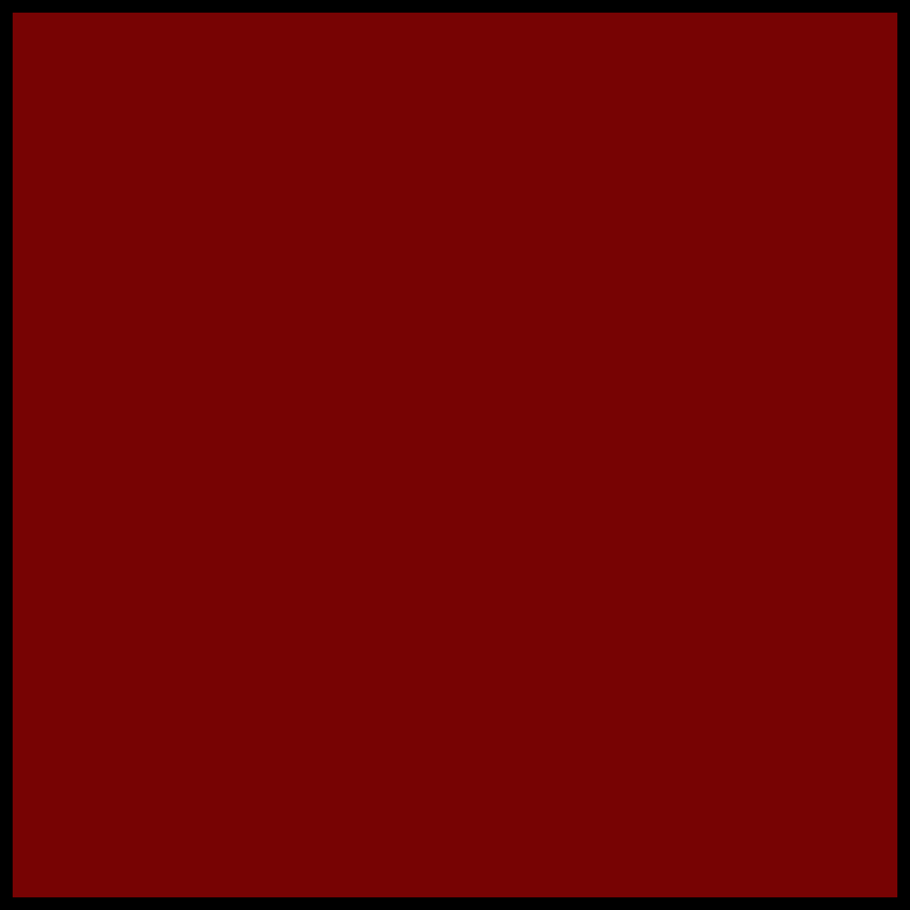
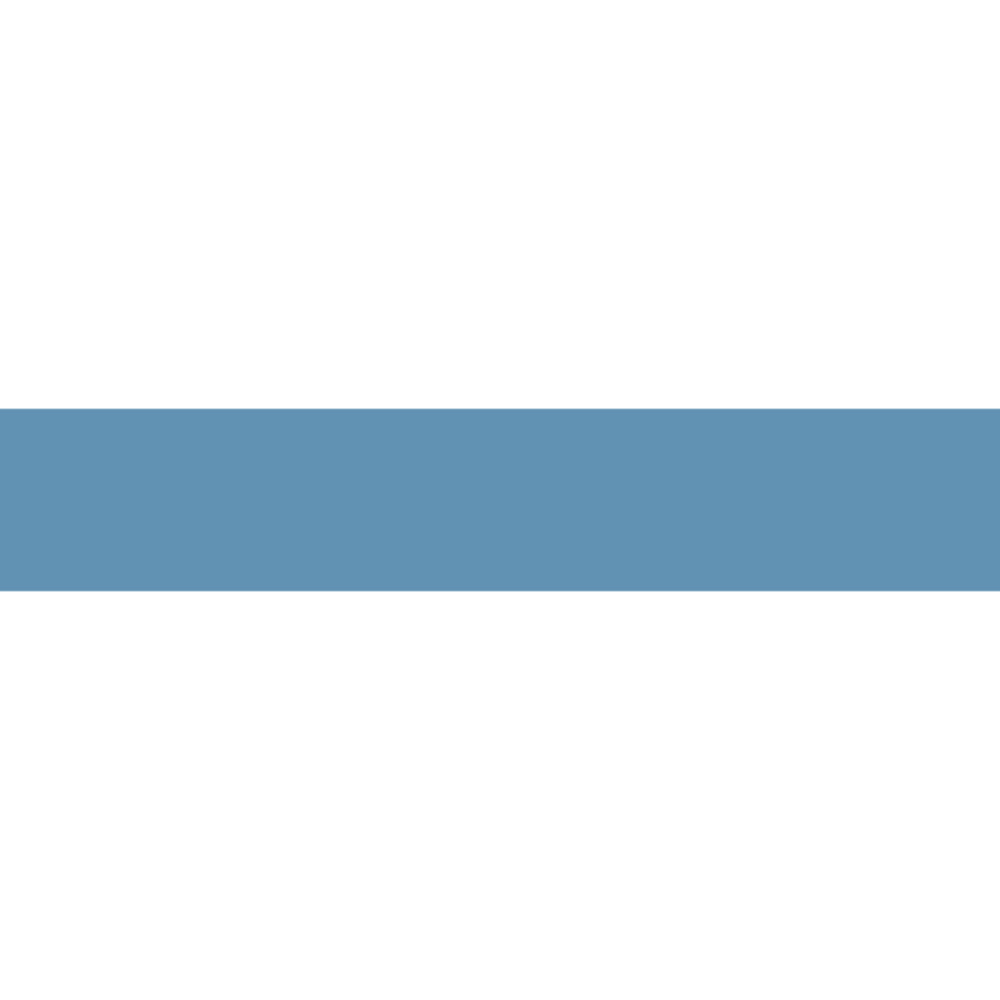
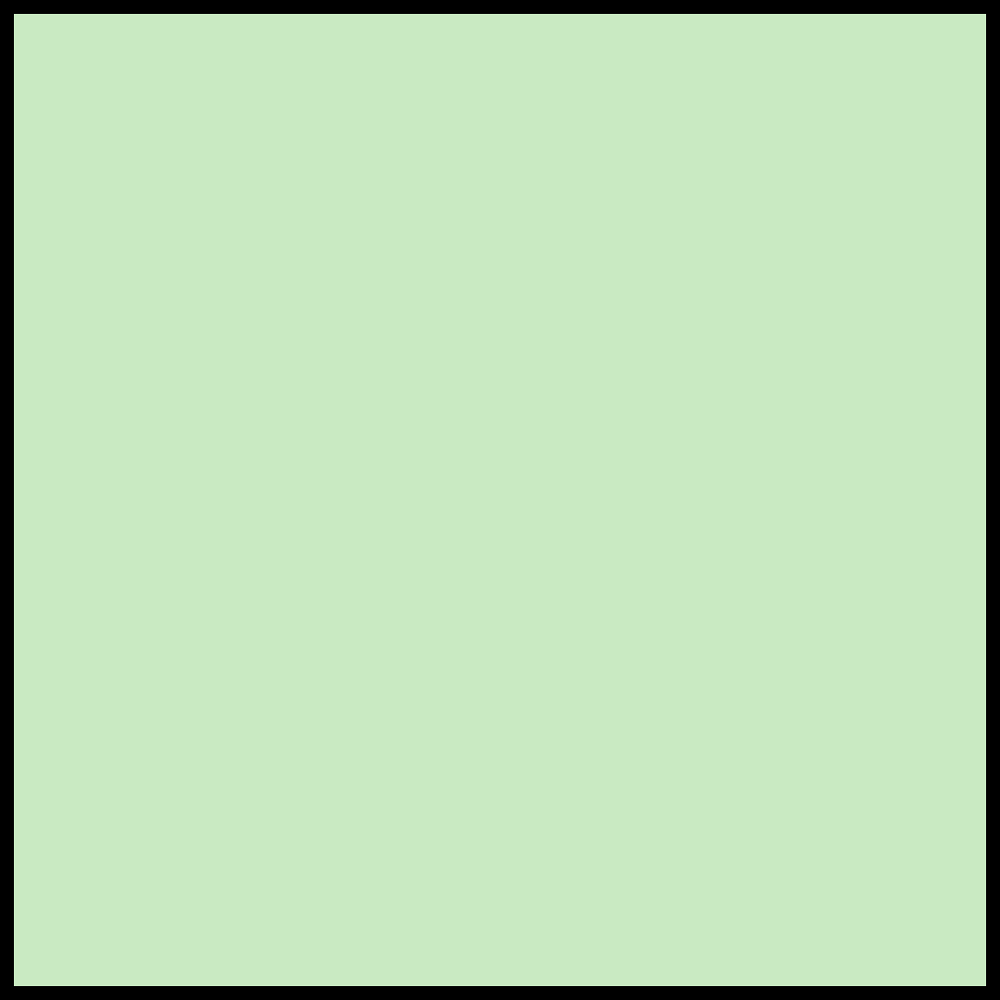

Mapa 01
Bairros Saudáveis: Localização de Parques, Ciclovias e Transporte Público
Legenda
- Terminal de ônibus
-  Zonas de influência dos terminais de ônibus
- Ciclovia
-  Parques e bosques
-  Praças e jardinetes
- Divisa de bairros
Mapa 02
Mapa de Risco: Áreas de Ocupação Irregular com Potencial de Alagamento
Legenda
-  Áreas de Ocupação Irregular
-  Áreas Inundáveis
-  Rios
- Divisa de bairros
Mapa 03
Cobertura Verde: Percentual de Parques e Bosques nos Bairros de Curitiba
Legenda
Porcentagem de parques e bosques por área total do bairro
-
0 - 0.3
 0.4 - 1.62
 1.63 - 4.51
1.63 - 4.514.52 - 7.22
7.23 - 10.13
Bairros de Curitiba
- Divisa de Bairros